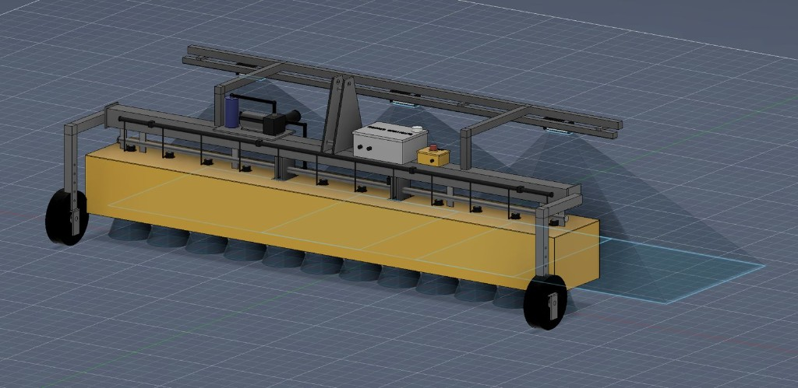
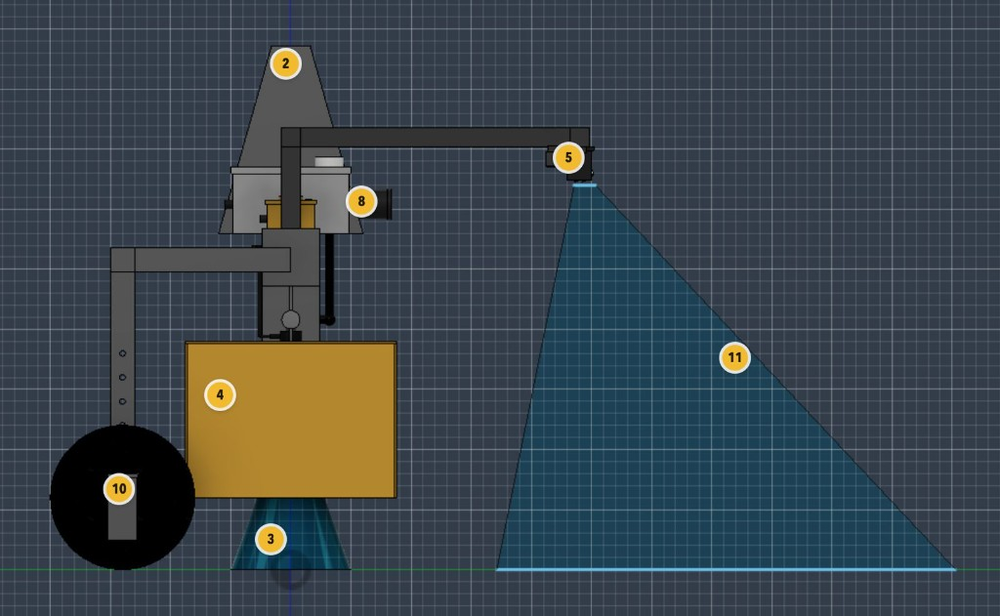

VIN
Vineyards
Row-following between trellises. Targeted fungicide application on canopy without drift to adjacent rows.
Autonomous ground spraying with computer vision targeting. RK-SPRAY identifies individual plants and applies pesticide with centimeter-level precision — reducing chemical use while increasing coverage accuracy.

Operating principle
Blanket spraying is a blunt instrument. RK-SPRAY treats every plant as a discrete target — sensing, classifying, and applying in a single pass.
01
Integrated perception stack, 120 L fluid reservoir, and linear nozzle array mounted on a rigid steel frame with end-wheel drive.

Side elevation with perception cones, fluid delivery, and drive subsystem annotated for field service.
02
Sealed enclosure for dual LiDAR units and RGB cameras. Downward-facing field of view covers full application swath.
120 L chemical tank with level sensing and quick-release fittings. Compatible with standard agricultural formulations.
12 individually addressable nozzles with solenoid control. Variable-rate output per nozzle based on plant detection.
High-pressure diaphragm pump with inline filtration. Maintains consistent droplet size across operating pressure range.
End-mounted wheels with independent motor control. Low ground pressure for row-crop and vineyard operation.
Perception-to-actuation loop runs at 30 Hz. Spray commands issued within 12 ms of target classification.
3.2m
Application swath per pass
12ms
Perception-to-spray latency
40%
Average chemical reduction
8hr
Continuous operation per tank
03
Onboard vision classifies crop, weed, and bare soil in real time. Chemical applied only to classified targets — not the entire row.
Each of the 12 nozzles operates independently. Application volume adjusts to plant density, size, and pest pressure across the swath.
LiDAR-based navigation maintains row alignment without GPS dependency. Operates in tree canopy, tunnel, and greenhouse environments.
Every application event logged with GPS coordinates, chemical type, volume, and timestamp. Export-ready for EPA and state reporting.
04
05
RK-SPRAY integrates into existing operations without replacing your fleet. Deploy in four steps.
Map row geometry, entry points, and chemical zones. RK-SPRAY builds a mission plan from your field boundaries.
Run a calibration pass to tune perception models for your crop type, growth stage, and lighting conditions.
Assign missions from the Rockio console or run pre-programmed schedules. Monitor coverage and chemical use in real time.
Download application logs with GPS tracks, volumes, and timestamps. Ready for regulatory submission.
06
VIN
Row-following between trellises. Targeted fungicide application on canopy without drift to adjacent rows.
ROW
Corn, soy, and specialty vegetables. Weed-specific application reduces herbicide load across entire fields.
ORC
Tree-level pest management with perception tuned for trunk and canopy geometry in perennial systems.
GRN
GPS-denied navigation for enclosed environments. Precise application in high-density bench and tray layouts.
Early access program
We are partnering with growers for field trials across the US. Limited slots available for the 2026 season.